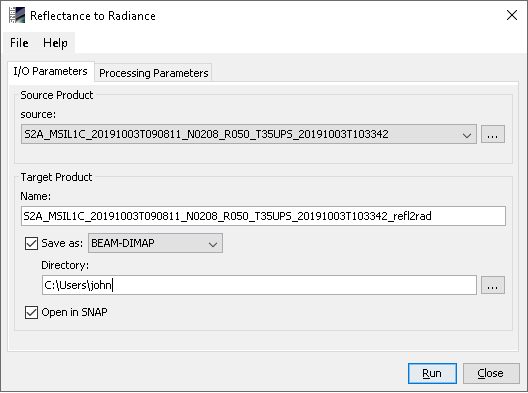
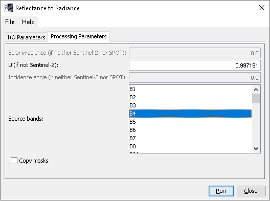

| Reflectance to Radiance Operator | |
The Reflectance to Radiance Processor converts the Top Of Atmosphere (TOA) reflectance to radiance from a given product.
Reflectance to Radiance Algorithm Specification
Source ProductsSource: Specify the source product which will be used for the computation. Target ProductName: Used to specify the name of the target product.
Save as:
Used to specify whether the target product should be saved to the file system. The
combo box presents a list of file formats.
The text field allows to specify a target directory. Open in SNAP: Used to specify whether the target product should be opened in the Sentinel Toolbox. When the target product is not saved, it is opened in the Sentinel Toolbox automatically. |
 |
|
Solar irradiance (if neither Sentinel-2 nor SPOT): Specify the solar irradiance, only if the source product is neither Sentinel-2 nor SPOT. For Sentinel-2 and SPOT products the solar irradiance is extracted from metadata. U (if not Sentinel-2): Specify the quantification value (U). For Sentinel-2 products this value is extracted from metadata. Incidence angle (if neither Sentinel-2 nor SPOT): Specify the incidence angle in degrees, only if the source product is neither Sentinel-2 nor SPOT. For Sentinel-2 products the incidence angle is replaced with the values from the sun_zenith band. For SPOT products the value is extracted from metadata. Source bands: Specify the source bands for the computation. Copy masks: If set, all the masks from the source product are written to target product. |
 |